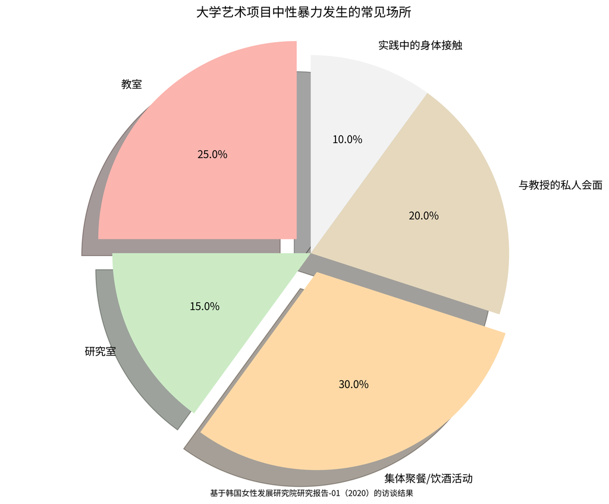
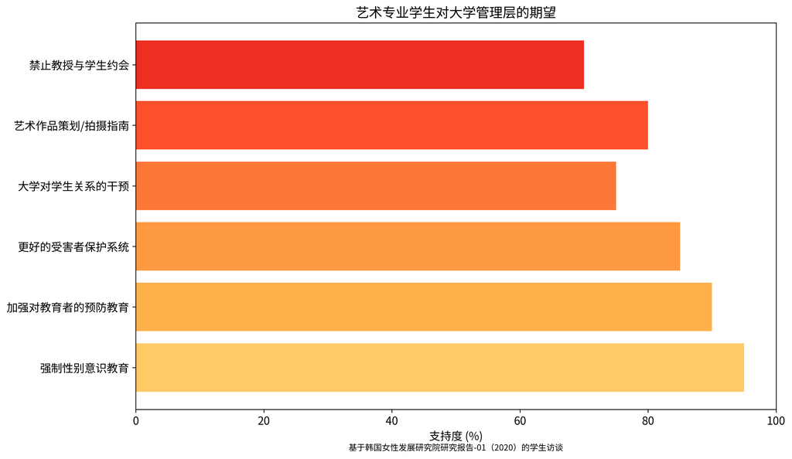

米兔运动后艺术教育中的性暴力：现状和政策问题
21 Apr, 2025
引言
2018年韩国的米兔运动揭露了艺术教育中惊人的性暴力程度。韩国女性发展研究院的这项综合研究审视了音乐学院和艺术学校中性暴力的独特特征，揭示了学徒模式和等级结构如何创造出滋生虐待的环境。

关键发现
发生率和特征
研究发现，艺术和体育系相比其他大学系别，有明显更高的性暴力发生率。在文化和艺术领域，权力动态创造了特别脆弱的情况：
- 尽管在大多数艺术系中女学生占多数，但男性教授拥有不成比例的权力
- "艺术家-导师"关系超越了正常的教学界限
- 教授作为学生未来职业的关键行业把关人
- "艺术表达"常被用来为不适当的性行为辩护
高风险环境
性暴力在艺术教育的多种环境中发生：
- 教室（通过不适当的例子或示范）
- 研究室
- 强制性的集体聚餐和饮酒活动
- 与教授的私人会面
实践过程中的身体接触由于缺乏明确的界限或同意指导方针，创造了特别模糊的情况。
结构性因素
研究确定了几个允许虐待继续存在的制度性失败：
- 大学缺乏对受害者的充分支持系统
- 申诉咨询机构组织地位低，资源不足
- 预防教育不一致且往往效果不佳
- 对加害者的惩戒行动经常过于宽松或执行不力
- 受害者在调查过程中遭受二次创伤
学生的回应和行动主义
米兔运动赋予学生通过各种渠道发声的力量：
- 社交媒体披露和匿名在线社区
- 大学空间中手写的海报
- 学生会紧急委员会
- 要求机构问责
学生们组织收集事件报告，要求大学采取行动，在惩戒过程中代表受害者，提供支持资源。然而，他们经常遇到来自机构和教师的阻力。
变革建议
研究提出了全面的政策改进：
- 部级责任：教育部必须加强监督，修改相关法律，并将防治性暴力纳入大学评估
- 申诉处理：为申诉机构建立更强有力的法律基础，确保配备经过培训的人员，改善保密保护
- 艺术教育特定政策：增加部际合作，在机构间共享加害者信息，扩大性别意识课程
- 监管改进：限制加害者通过辞职逃避后果，改善受害者通知程序，提高预防教育效果
结论
在艺术领域创造安全的教育环境需要解决促成虐待的独特权力动态和文化因素。这项研究揭示了问题的规模，并为机构和政策变革提供了路线图。
资料来源:
- 下载图表 (.png) - 包含报告中使用的所有图表文件
- 下载完整报告 (PDF) - 完整研究报告的PDF版本
- HTML和PDF版本 - 报告的HTML和PDF版本下载链接
- 原研究: "米兔运动后文化艺术领域大学生遭受性暴力的现状和政策问题"（2020）作者：李美贞、尹德庆、全惠相、郑秀妍、李成美，韩国女性发展研究院